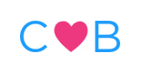
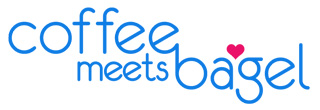

The CMB Android app before 2016 used a hamburger menu for navigation. We found through analytics that many users were not visiting pages other than the Daily Bagel page. We wanted to increase engagement and make users aware of the many features of the app. By switching to a tabbed navigation, we were able to surface more pages and make buttons like “Invite” and “Bean Count” (in app currency) more accessible. We also took this redesign opportunity to align with Google Material Guidelines.
Our customers responded well to the update and engagement on previously hard to find features more than tripled. The redesigned app was featured in the Google Play Store and downloads of the App increased.
My Role
As Head of Product Design, I was both a designer and a manager. I felt the best course of action for on an ongoing project dealing directly with Google, was to have one designer responsible from concept to delivery. I had never used Android phone and was not familiar with material design guidelines so I began by conducting extensive research on popular Android apps. I did the
UI/UX design,
the user testing,
prototyping,
visual design,
final spec,
asset production,
and art direction of the final shipped app.
Process
1. Set Goals - I find the first thing to do at the beginning of any project is to ask why the effort is being undertaken and to determine clear goals. The main goals for this redesign were:
To surface more features
To have users engage with more than the Daily Bagel page
To modernize the app and make the overall look cleaner
To respond to customer feedback and make loyal user base feel heard
To apply best practices of material design in order to get featured on the Google play store
These screenshots show the older app. The image in the left is the Daily Bagel page where the latest matches are presented. The hamburger menu is hard to see and covers the content when engaged.
2. Analyzed Feedback - For the next step, I analyzed feedback gathered from users and previous Google reviews. I also talked to the lead Android developers and the CTO to get their feedback as expert Android users.
Where did the current app fail?
What feedback had we not included to date?
What Material Design conventions should be prioritized?
3. Best Practices - I reviewed latest Google material guidelines and familiarized myself with best practices. Google has a huge repository of material design with very specific directions on how to implement all aspects of material design - from spacing to animation to font selection.
4. Research Popular Android Apps - I researched apps using material design and evaluated what could work for us. I assembled a deck of the best material design I could find including UI, visual design, and interaction. I then presented this deck and my recommendations to our CEO and Android devs.
First major design decision - how many levels to include in our tab bar?
Second major design decision - top or bottom tab bar?
Other decisions included what features to surface and what features to place in the overflow tab
one level
two levels
three levels
5. Initial Design - I began the visual design with the most important page - the Daily Bagel page. The design of this page would determine the design of the rest of the app. I used Sketch and Photoshop to do the mock-ups. The tab bar was on top in these first designs.
one level
two levels
6. Design Continues - design is a highly iterative and collaborative process. I had enough time to explore several directions, making the final decisions solidly defendable.
The tab bar is placed on the bottom of the page for ergonomic reasons and easier use with one hand
We decide on four tabs as that seems balanced and there's adequate space even on the smallest sized phone
The Daily Bagel page is organized more efficiently
I design a new Coffee Meets Bagel logo as the ratio of existing logo is not well suited
New Beans and Invite icons are designed
The hamburger menu is removed and an overflow menu is added
The countdown is placed over the bagel photo and a new clock icon is added. Putting the countdown here creates more of a correlation between the surfaced profile and the idea that a decision has to be made
Notifications are added
Material Design shadows are added
The status bar color is changed to black to balance the Android menu color
Roboto font replaces Raleway font
New app logo

CMB logo at that time

New design
Old design
The hamburger menu has been removed in the new design, allowing the small logo to be placed in the header for better brand recognition. Raleway has an uneven baseline - seen in the clock in the older design. Roboto has an even baseline and a generally cleaner appearence. The in-app currency (beans) and the invite button can be seen at all times.
The bottom tabbed interface shows the four main pages - Daily Bagel, Discover, Chat, and Profile. Less pertinent information is moved into the overflow menu which is activated when the toolbar (the three dots) on the upper right is pressed.
Grid size is increased to create breathing room and balance.
New design
Old design
Other pages are redesigned.
Tooltips and snackbars are used where needed such as on the Profile page to allow for editing.
New icons in better detail.
7. Design is Approved - a final deck is sent out for approval.
Design is approved by CEO
Design is sent to Google for review
App gets positive feedback and is approved pending polish of a few minors issues
8. Specs & Assets - Specs and assets are created for the Android developers.
Top app bar spec
Bottom navigation bar specs
Folder view of assets created for each Android resolution
9. Art direction - I worked closely with the Android developers to make sure the app is built to design specs and that the interaction is smooth. We used JIRA for bug reporting and tracking.
10. Liftoff! - In-house design review of the 5th iteration of the built app is approved and shipped!